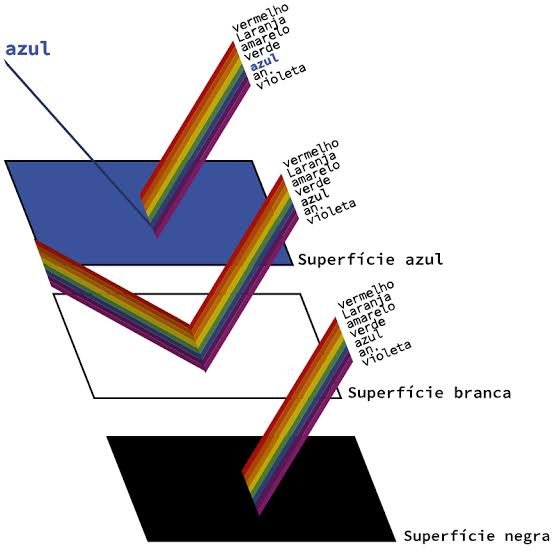

O que é a Física das Cores? A física das cores é o estudo de como a luz interage com os objetos e com os nossos olhos. Ao contrário do que parece, a cor não é uma propriedade fixa de um objeto, mas sim a interpretação que o nosso cérebro faz da luz refletida por ele. Principais Conceitos Espectro Visível: A luz branca (como a do Sol) é a mistura de todas as cores do arco-íris. Cada cor possui um comprimento de onda diferente. Ao passar por um prisma, essa luz se divide (fenômeno da dispersão). Absorção e Reflexão: * Um objeto é vermelho porque absorve todas as outras cores e reflete apenas o vermelho. O branco reflete todas as cores. O preto absorve todas as cores (ausência de luz refletida). Os Dois Sistemas de Cores Para organizar como as cores se comportam no mundo físico e no digital, dividimos o estudo em dois sistemas: Sistema. Como Enxergamos? Os olhos humanos possuem células especiais na retina chamadas cones, divididas em três tipos: receptoras de vermelho, verde e azul. O cérebro recebe os estímulos elétricos dessas células, combina os sinais e gera a infinidade de cores que vemos no dia a dia.

Espelhos e Reflexão da Luz A reflexão é o fenômeno óptico que ocorre quando a luz atinge uma superfície e retorna ao seu meio de origem. É graças a esse comportamento da luz que os espelhos conseguem projetar imagens. As Leis da Reflexão Toda reflexão segue duas regras matemáticas fundamentais: O raio que chega (incidente), o raio que volta (refletido) e a linha reta imaginária perpendicular à superfície (normal) estão sempre no mesmo plano. O ângulo de entrada é exatamente igual ao ângulo de saída ($i = r$). Tipos de Reflexão Regular (Especular): Ocorre em superfícies perfeitamente lisas (como espelhos). Os raios de luz voltam organizados e na mesma direção, formando imagens nítidas. Difusa: Ocorre em superfícies rugosas (como paredes ou papel). A luz é espalhada em várias direções. Não forma imagens refletidas, mas é o que nos permite enxergar os objetos ao nosso redor. Tipos de Espelhos e Suas Aplicações Os espelhos são classificados pelo formato de sua superfície refletora, alterando o tamanho e o campo de visão da imagem: Tipo de Espelho
